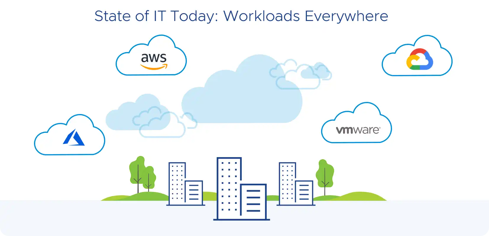
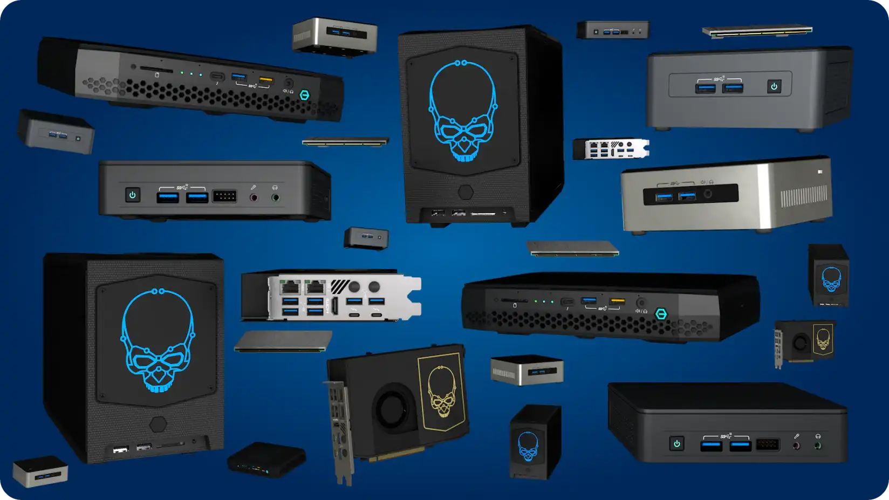
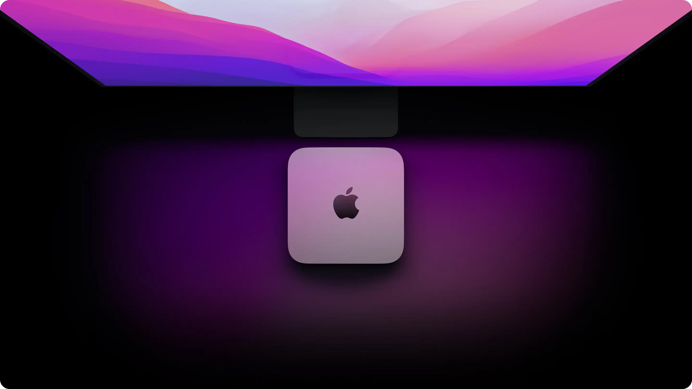
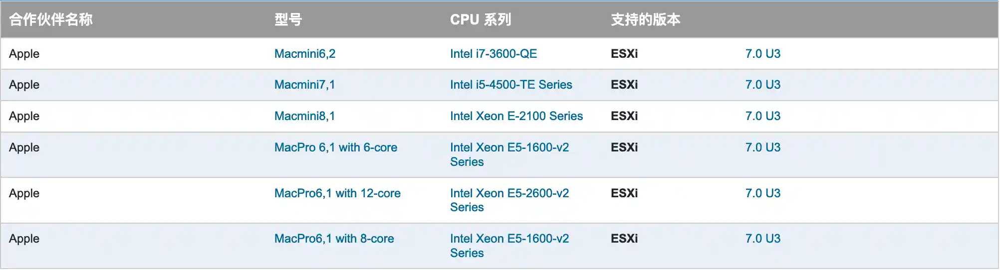
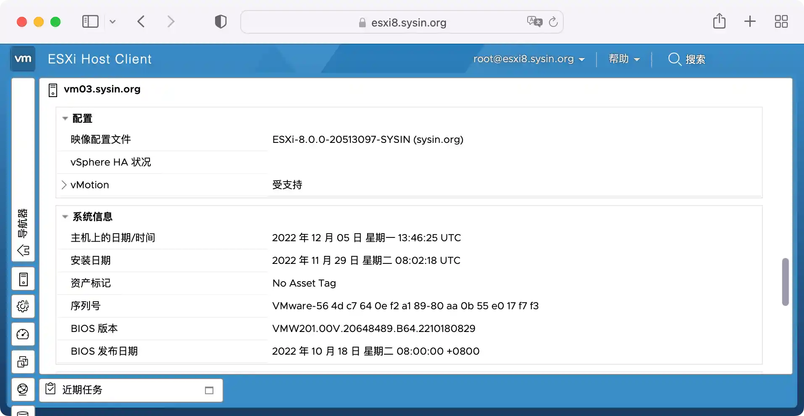

请访问原文链接：VMware ESXi 8.0c macOS Unlocker & OEM BIOS 集成网卡驱动和 NVMe 驱动 (集成驱动版)，查看最新版。原创作品，转载请保留出处。
作者主页：sysin.org
新版已发布：VMware ESXi 8.0U1c macOS Unlocker & OEM BIOS 集成网卡驱动和 NVMe 驱动 (集成驱动版)
发布 ESXi 8.0 集成驱动版，在个人电脑上运行企业级工作负载，构建开发、测试和学习的最佳平台。

通用特性概览
该版本在官方原版基础上新增以下特性：
- macOS Unlocker：来自 GitHub 的 Unlocker 4，现已支持 macOS Ventura
- OEM BIOS：使用社区最流行的 OEM BIOS/EFI64，现已支持 Windows Server 2022
- LegacyCPU support，允许在不受支持的旧款 CPU 上安装 ESXi 8.0
- 有限支持第 12、13 代 Intel CPU 混合架构，可以正常引导和运行
- ESX-OSData 卷大小修改为 8G，解决 ESXi 7.0 开始的安装占用磁盘空间过大的问题（超过 142GB）
直接运行 macOS Ventura
ESXi 默认是支持创建 macOS 虚拟机的，但该功能仅限于 Apple Mac 硬件上启用。该版本解锁了对 macOS 虚拟化的支持，在任意非 Mac 硬件上可以直接运行 macOS 虚拟机。
⚠️ macOS 虚拟机与 Mac 上的 macOS 体验有天壤之别，仅用于体验而已。开启 macOS 卓越性能的唯一平台是搭载 Apple M 芯片的 Mac。尽早加入 Apple 阵营，开启卓越体验吧。
直接新建虚机，操作系统选择 “Apple macOS 11 (64-bit)” 或者 “Apple macOS 12 (64-bit)”，即可安装和正常启动：

这里有个小错误：Apple OS X 10.12 应该为 Apple macOS 10.12，ESXi 7 中不存在这个问题。
虚拟化中的 macOS Ventura：

附：
- macOS Big Sur 可启动 iso 下载：macOS Big Sur 11.7.10 (20G1427) Boot ISO 原版可引导镜像
- macOS Monterey 可启动 iso 下载：macOS Monterey 12.7.3 (21H1015) Boot ISO 原版可引导镜像 (安全更新)
- macOS Ventura 可启动 iso 下载：macOS Ventura 13.6.4 (22G513) Boot ISO 原版可引导镜像 (安全更新)
VMware_Dell_2.6_BIOS-EFI64
来自社区最新的 OEM BIOS/EFI64，现已更新支持 Windows Server 2022。
BIOS.440 & EFI64.ROM - Dell 2.6 OEM BIOS: NT 6.0 (Vista/Server 2008), NT 6.1 (7/Server 2008 R2), NT 6.2 (Server 2012), NT 6.3 (Server 2012 R2), NT 10.0 (Server 2016/Server 2019/Server 2022)
Windows Server OVF 系列：
- Windows Server 2008 R2 OVF, updated Dec 2023 (sysin) - VMware 虚拟机模板
- Windows Server 2016 OVF, updated Dec 2023 (sysin) - VMware 虚拟机模板
- Windows Server 2019 OVF, updated Dec 2023 (sysin) - VMware 虚拟机模板
- Windows Server 2022 OVF, updated Jan 2024 (sysin) - VMware 虚拟机模板
其他 OVF，如：AlmaLinux 9 x86_64 OVF (sysin) - VMware 虚拟机模板，Ubuntu 22.04 LTS x86_64 OVF (sysin) - VMware 虚拟机模板，更多请在本站搜索 “OVF”。
支持不受官方支持的旧款 CPU
ESXi 8.0 同样废弃了对部分旧款 CPU 的支持，以下 CPU 将不受 ESXi 8.0 支持：
- Intel Family 6, Model = 2A (Sandy Bridge DT/EN, GA 2011)
- Intel Family 6, Model = 2D (Sandy Bridge EP, GA 2012)
- Intel Family 6, Model = 3A (Ivy Bridge DT/EN, GA 2012)
- AMD Family 0x15, Model = 01 (Bulldozer, GA 2012)
vSphere 7.0 Update 2 及更高版本中 ESX 安装程序显示的如下警告消息已经明示：
CPU_SUPPORT_WARNING: The CPUs in this host may not be supported in future ESXi releases. Please plan accordingly.
修改启动参数，在官方不受支持的 CPU 的服务器上可以正常安装。
根据 VMware vSphere 7.0 Release Notes，以下 CPU 已经不受支持（无法安装或者升级 ESXi 7.0）
Comparing the processors supported by vSphere 6.7, vSphere 7.0 no longer supports the following processors:
- Intel Family 6, Model = 2C (Westmere-EP)
- Intel Family 6, Model = 2F (Westmere-EX)
笔者在一台 2010 年发布的服务器上安装运行良好 (sysin)：HP DL 380 G7，Intel® Xeon® CPU E5606

备注：本截图为 7.0 版本
ESX-OSData 卷大小修改为 8G

ESXi 8.0 对存储容量的要求未有明显变更，以下 ESXi 7.0 的描述基本适用。
⚠️ 在 ESXi 8.0 中建议放弃使用 USB/SD 卡作为系统存储介质（虽然 SD 卡和 USB 介质继续获得有限支持，详见 KB85685）。
从 ESXi 7.0 开始，对磁盘空间的要求有所变化：
- 8GB SD 卡 + 32GB 本地磁盘
- 32GB 本地磁盘
- 142G 或者更大的本地磁盘
通常我们在一块数百 GB 或者更大的本地磁盘上安装 ESXi，系统分区磁盘空间将占用 142GB 以上，整个系统分区（内核参数：systemMediaSize）需要 138GB 和 4GB 以上的空闲空间，其中 ESX-OSData volume 大约需要 120GB 的磁盘空间，对于磁盘空间紧张情况下可能有一定的浪费 (sysin)。修改后，系统安装后占用的磁盘空间不超过 16GB（特别是针对个人实验，无需浪费过多存储容量）。
图：vSphere 7 中的新分区架构，只有系统引导分区固定为 100 MB，其余分区是动态的，这意味着分区大小将根据启动媒体大小确定。

从 vSphere 7.0 Update 1c 开始，您可以使用 ESXi 安装程序引导选项 systemMediaSize 限制启动媒体上系统存储分区的大小。如果您的系统占用空间较小，不需要最大 128 GB 的系统存储大小，您可以将其限制为最小 32 GB。systemMediaSize 参数接受以下值：
- min（32 GB，用于单磁盘或嵌入式服务器）
- small（64 GB，用于至少有 512 GB RAM 的服务器）
- default（128 GB）
- max（消耗所有可用空间，用于多 TB 的服务器）
即使设置值为 min，相比之前的版本所需存储容量还是要大的多。
有限支持第 12 代+ Intel CPU 混合架构
ESXi 面向数据中心虚拟化，在测试和学习时也常常将其运行于桌面 PC 之上。
据悉 ESXi 8.0 并不支持第 12 代 Intel 处理器，直接引导会出现 PSOD。本次通过加载内核参数可以有限支持第 12 代 Intel CPU，即可以正常引导和安装，也可以正常运行 (sysin)，但是无法区分或识别两种核心，P 核的超线程是无法识别的，比如 i7-12650H 配备 6P + 4E 在桌面系统中显示为 16 核心，而在 ESXi 中仅识别为 10 核。现在有了更好的解决方案，绝大多数主流品牌机和主板都可以通过配置开启 P 核的超线程（非主流请慎选）。
已经广泛验证支持第 12、13 代 Intel 处理器，更多案例，期待您的反馈。
第 12 代英特尔酷睿桌面级处理器有 N 个性能核（P 核，Performance-core）和 N 个能效核（E 核，Efficient-core）组成，性能核和能效核的混合架构，是 12 代酷睿处理器最大的革新。该架构或俗称 PE 大小核。
第 12、13 代 Intel CPU 已经成功安装 ESXi 后需要进一步配置参数，可联系笔者了解详情。
集成的驱动
网卡兼容性
✅ USB Network Native Driver: 该项目名为 USB 网络原生驱动，支持以下芯片和 ID 的网卡。
2022 年 11 月 23 日发布的 USB Network Native Driver 兼容 ESXi 8.0。
USB Network Native Driver for ESXi (sysin) version 1.12 — April 26, 2023
Any adapters using the following chipsets and with the following VID/PID are supported.
| Vendor | Chipset | VendorID | DeviceID |
|---|---|---|---|
| AQUANTIA | AQC111U | 0xe05a | 0x20f4 |
| AQUANTIA | Aquantia Pacific | 0x2eca | 0xc101 |
| ASIX | AX88179 | 0x0b95 | 0x1790 |
| ASIX | AX88178a | 0x0b95 | 0x178a |
| CISCO LINKSYS | RTL8153 | 0x13b1 | 0x0041 |
| DLINK | RTL8156 | 0x2001 | 0xb301 |
| DLINK | AX88179 | 0x2001 | 0x4a00 |
| INSYDE SOFTWARE CORP | Insyde Software Corp. | 0x0b1f | 0x03ee |
| LENOVO | RTL8153 | 0x17ef | 0x3062 |
| LENOVO | RTL8153 | 0x17ef | 0x3069 |
| LENOVO | RTL8153 | 0x17ef | 0x720a |
| LENOVO | AX88179 | 0x17ef | 0x304b |
| LENOVO | RTL8153 | 0x17ef | 0x7205 |
| NVIDIA | RTL8153 | 0x0955 | 0x09ff |
| Qualcomm | NA | 0x1A56 | 0x3100 |
| Qualcomm | NA | 0x0b05 | 0x1976 |
| REALTEK | RTL8152 | 0x0bda | 0x8152 |
| REALTEK | RTL8156 | 0x0bda | 0x8156 |
| REALTEK | RTL8153 | 0x045e | 0x07c6 |
| REALTEK | RTL8153 | 0x0bda | 0x8153 |
| SITECOMEU | AX88179 | 0x0df6 | 0x0072 |
| SUPERMICRO | Supermicro computer Inc | 0x15d9 | 0x1b83 |
| TP-LINK | RTL8153 | 0x2357 | 0x0601 |
| TRENDNET | AQC111U | 0xe05a | 0x20f4 |
✅ Community Networking Driver 已经内置
Community Networking Driver 项目中的驱动已经获得 ESXi 8.0 的官方支持。
- Any PCIe network adapters with VID/PID listed below are supported (sysin)
igc-community: All devices below is now available in ESXi 8.0 and newer
| Vendor | Chipset | VendorID | DeviceID |
|---|---|---|---|
| Intel | Ethernet Controller I225-LM | 0x8086 | 0x15f2 |
| Intel | Ethernet Controller I225-V | 0x8086 | 0x15f3 |
| Intel | Ethernet Controller I225-IT(2) | 0x8086 | 0x0d9f |
| Intel | Ethernet Controller I225-I | 0x8086 | 0x15f8 |
| Intel | Ethernet Controller I225-K | 0x8086 | 0x3100 |
| Intel | Ethernet Controller I225-K(2) | 0x8086 | 0x3101 |
| Intel | Ethernet Controller I225-LMvP(2) | 0x8086 | 0x5502 |
| Intel | Ethernet Controller I226-K | 0x8086 | 0x5504 |
| Intel | Ethernet Controller I226-LM | 0x8086 | 0x125b |
| Intel | Ethernet Controller I226-V | 0x8086 | 0x125c |
| Intel | Ethernet Controller I226-IT | 0x8086 | 0x125d |
| Intel | Ethernet Controller I220-V | 0x8086 | 0x15f7 |
| Intel | Ethernet Controller I221-V | 0x8086 | 0x125e |
e1000-community: All devices below is now available in ESXi 7.0 Update 3f and newer
| Vendor | Chipset | VendorID | DeviceID |
|---|---|---|---|
| Intel | Ethernet Connection (6) I219-LM | 0x8086 | 0x15bd |
| Intel | Ethernet Connection (6) I219-V | 0x8086 | 0x15be |
| Intel | Ethernet Connection (7) I219-LM | 0x8086 | 0x15bb |
| Intel | Ethernet Connection (7) I219-V | 0x8086 | 0x15bc |
| Intel | Ethernet Connection (10) I219-LM | 0x8086 | 0x0d4e |
| Intel | Ethernet Connection (10) I219-V | 0x8086 | 0x0d4f |
| Intel | Ethernet Connection (11) I219-LM | 0x8086 | 0x0d4c |
| Intel | Ethernet Connection (11) I219-V | 0x8086 | 0x0d4d |
| Intel | Ethernet Connection (12) I219-LM | 0x8086 | 0x0d53 |
| Intel | Ethernet Connection (12) I219-V | 0x8086 | 0x0d55 |
| Intel | Ethernet Connection (13) I219-LM | 0x8086 | 0x155b |
| Intel | Ethernet Connection (13) I219-V | 0x8086 | 0x155c |
| Intel | Ethernet Connection (14) I219-LM | 0x8086 | 0x15f9 |
| Intel | Ethernet Connection (14) I219-V | 0x8086 | 0x15fa |
| Intel | Ethernet Connection (15) I219-LM | 0x8086 | 0x15f4 |
| Intel | Ethernet Connection (15) I219-V | 0x8086 | 0x15f5 |
| Intel | Ethernet Connection (16) I219-LM | 0x8086 | 0x1a1e |
| Intel | Ethernet Connection (17) I219-V | 0x8086 | 0x1a1f |
| Intel | Ethernet Connection (17) I219-LM | 0x8086 | 0x1a1c |
| Intel | Ethernet Connection (17) I219-V | 0x8086 | 0x1a1d |
Intel 网卡增强定制版
更新或增加以下 Intel 网卡的 async 驱动，启用兼容列表的中 Intel 网卡完整功能。
-
Intel® Ethernet Controllers X710, XL710, XXV710, and X722 family
-
Intel® Ethernet Controllers E810-C and E810-XXV family
-
Intel® Ethernet Controllers 82580, I210, I350, and I354 family
-
Intel® Ethernet Controllers E810-C, E810-XXV and X722 family
-
Intel® Ethernet Controllers 82599, x520, x540, x550, x552 and x553 family
集成 NVMe 驱动
2021 年 11 月 10 日发布的 Community NVMe Driver for ESXi 更新，支持 ESXi 7.0 及更新版本 (sysin)，同样可用于 ESXi 8，支持以下存储设备：
Community NVMe Driver for ESXi version 1.2 — November 10, 2021
Non-Apple NVMe:
- VMware ESXi 7.0 (x86) or newer is required
- Any NVMe storage devices with VID/PID listed below are supported
| Vendor | VendorID | DeviceID |
|---|---|---|
| ADATA | 0x1cc1 | 0x8201 |
| Micro/Crucial | 0xc0a9 | 0x2263 |
| Silicon Motion | 0x126f | 0x2262 |
NVMe 驱动定制版本
可以增加已经被 ESXi 8.0 弃用，但是可以验证在 ESXi 6.5、6.7 或者 7.0 中受支持的 NVMe 驱动。此项需要额外定制。
ESXi 版本的更新，总是伴随着部分硬件被弃用，通常是在大版本中，当然也可能在某些 Update 版本中。只要能验证在旧版中（6.5、6.7 或者 7.0 的任意版本）受支持，在 8.0 系列版本中就有机会获得支持。这些可能是一些消费品牌的 SSD，当然也包括数据中心级 SSD。
成功案例：
- HP EX950
- ADATA XPG SX8200
- 长江存储 致态 PC005
- HP FX700（新增）
如果您的 NVMe SSD 从未在 ESXi 的任何版本中获得支持，这些通常是一些非主流的消费品牌 SSD，同样也无法获得支持（除非产品供应商提供驱动）。
⚠️ 警告：在 ESXi 8.0 中此类产品未受官方及厂商验证和支持，部分用户反馈有效，而部分反馈可以识别但是功能异常（或许跟主板有关），请慎用。但是在 ESXi 6.7 和 7.0 的定制版中目前的反馈都是工作正常（也可能是反馈少的原因），专为此类 SSD 运行 ESXi 建议选择（或为替代方案）ESXi 6.7 或者 7.0 版本。
平台兼容性
这里描述的是不受官方支持，但可以成功运行 ESXi 8.0 的实验环境硬件。
Intel NUC
早期该镜像集成网卡驱动主要是针对以下 NUC，如果您的 NUC 属于内置驱动支持的型号，直接使用标准的 ESXi 镜像即可（当然该版本也可以通用）。

经第三方验证以下 Intel NUC 硬件平台已经可以成功运行 ESXi 8.0:
- Intel NUC 5 (Rock Canyon)
- Intel NUC 6 (Swift Canyon)
- Intel NUC 8 (Dawson Canyon)
- Intel NUC 9 Extreme (Ghost Canyon)
- Intel NUC 9 Pro (Quartz Canyon)
- Intel NUC 10 Performance (Frost Canyon)
- Intel NUC 11 Performance (Panther Canyon)
- Intel NUC 11 Pro (Tiger Canyon)
- Intel NUC 11 Extreme (Beast Canyon)
- Intel NUC 12 (Dragon Canyon)
- Intel NUC 12 Pro (Wall Street Canyon)
- Intel NUC 12 Enthusiast (Serpent Canyon)
- Intel NUC 13 Pro (Arena Canyon)
- Intel NUC 13 Extreme (Raptor Canyon) (⚠️ 10GbE 不受支持)
警告：Intel® NUC 12 Extreme 包括 1 个 2.5GbE（英特尔 I225-LM，仅在 i9 型号上可用），以及 1 个 10GbE（Marvell AQC113），仅 i9 型号可以支持运行 ESXi，但是 10GbE 不可用，仅可直通给 VM 使用。
Intel® NUC 13 Extreme i5/i7/i9 均配备 10GbE (AQC113) + Intel® i226-V，与上述 i9 款情况相同。
Apple Mac

Apple Mac 是 ESXi 7.0 官方支持的硬件平台。Apple 已经转型 ARM 架构，虽然 ESXi-arm 项目仍在继续，但是暂时无法支持搭载 Apple 芯片的 Mac (sysin)。ESXi 8.0 不再官方支持 Apple Mac，但是仍然可以在部分 ESXi 7.0 兼容的 Mac 上成功运行。

图：ESXi 7.0 Apple Mac 兼容性列表
以下 Mac 机型经第三方验证可以成功运行 ESXi 8.0：
- Apple Mac Mini 7,1 (2014)
- Apple Mac Mini 8,1 (2018)（需要配置引导参数）
- Apple Mac Pro 7,1 (2019)
国产小主机
此类产品种类繁多，现代 Mini PC 多数配备 Intel 12、13 代 CPU，只要配备 Intel 网卡（配备 Realtek 网卡的机型除非新增 USB 网卡直接可以忽略），大概率能够运行 ESXi 8.0。
- ASRock NUC BOX-1360P D4/D5：Intel 13th CPU / 64GB DDR4 or DDR5 / 1 x M.2 2280 PCIe 4.0 / 1 or 2 x 2.5GbE (i226)
- ASRock iBOX-1265UE：Intel 12th CPU / 64GB DDR4 / 1 x M.2 2280 PCIe 4.0, 1 x SATA 3.0 / 2 x 2.5GbE (i225)
- ASUS Mini PC PL64：Intel 12th CPU / 64GB DDR4 (sysin) / 2 x M.2 2280 PCIe 4.0 / 1 x 1GbE (i219) and 1 x 2.5GbE (i226)
- ASUS Mini PC PN64：Intel 13th CPU / 64GB DDR5 / 1 x M.2 2280 PCIe 4.0 and 1 x SATA 3.0 / 1 x 2.5GbE (i226)
- ✓ 硬件验证 Lenovo ThinkStation P360 Ultra, Mini-tower (3.9L)：Intel 12th CPU / 128GB DDR5 (4x 32GB DDR5 SO-DIMM) / 2 x M.2 2280 PCIe 4.0 and 1 x SATA 3.0 / 1 x 1GbE (I210) and 1 x 2.5GbE (I225)，One additional Ethernet adapter Slot
- ✓ 硬件验证 Lenovo ThinkStation P360 Tiny, Micro (1L)：Intel 12th CPU / 64GB DDR5 (2x 32GB DDR5 SO-DIMM) / 2 x M.2 2280 PCIe 4.0 / 1 x 1GbE (I219-LM)，2 x Expansion slots
- 铭凡 MINISFORUM NPB7：i7-13700H (6P+8E) / 64GB DDR5 / 1 x M.2 2280 PCIe 4.0 and 1 x SATA 3.0 2.5 / 2 x 2.5GbE (i225 or i226)
- 铭凡 MINISFORUM NPB6：i7-13620H (6P+4E) / 64GB DDR5 / 1 x M.2 2280 PCIe 4.0 and 1 x SATA 3.0 2.5 / 2 x 2.5GbE (i225 or i226)
- 铭凡 MINISFORUM NPB5：i5-13500H (4P+8E) / 64GB DDR5 / 1 x M.2 2280 PCIe 4.0 and 1 x SATA 3.0 2.5 / 2 x 2.5GbE (i225 or i226)
- Xiaomi 迷你主机：Intel i5-1240P / 64GB DDR4 / 1 x M.2 2280 PCIe 4.0 and 1 x M.2 2242 SATA 3.0 / 1 x 2.5GbE (I225)
- Topton Fanless Mini PC (无风扇高性能软路由)：Intel 12th CPU / 64GB DDR4 / 1 x M.2 2280 PCIe 3.0 and 2 x SATA 3.0 non-standard / 6 x 2.5GbE (i226)
- 畅网微控 CW-5658：AMD Ryzen™ 5 / 7，64GB DDR4，3 x M.2 2280 PCIe 3.0，4 x 2.5G (Intel I226-V)
- 国伟 GW R86S G3 (万兆软件路由)：Intel Pentium Silver N6005 / 16GB DDR4 / 1 x M.2 2280 PCIe 3.0 / 3 x 2.5GbE (i225) and 2 x 10GbE SPF+ (ConnectX-3)，另有类似机型 R86S U4
- iKOOLCORE R1：Intel Pentium Silver N6005 / 16GB LPDDR4 (sysin) / 1 x M.2 2242 PCIe 3.0 / 4 x 2.5GbE (i226)
- 其他：更新中，欢迎反馈成功运行的硬件平台
兼容机
已知一些主流的主板品牌，如华硕、华擎、技嘉、微星、铭瑄、七彩虹、超微（皆已验证）等具备支持 Intel 12th+ CPU 的配置能力（AMD CPU 无需额外配置），只要板载为 Intel 网卡，通常可以直接支持运行 ESXi。对于常见的板载 Realtek 网卡的品类，通过新增网卡也非常容易解决（通常有多个扩展插槽）。
- ASUS 华硕（已验证）
- ASRock 华擎（已验证）
- GIGABYTE 技嘉（已验证）
- MSI 微星（已验证）
- MAXSUN 铭瑄（已验证）
- COLORFUL 七彩虹（已验证）
- SUPERMICRO 超微（已验证）
其他硬件
根据网上的文章分享（第三方验证），以下硬件可以成功运行 ESXi 8.0：
- Dell Precision 7770（笔记本，最大 128GB 内存）
- Dell Precision 7670（笔记本，最大 128GB 内存）
- HPE ProLiant MicroServer Gen10（官方支持）
- HPE ProLiant MicroServer Gen11（官方支持）
- Supermicro E200-8D
- Supermicro E302-12D
- 其他：更新中，欢迎反馈成功运行的硬件平台
其他硬件若无法判断是否兼容，建议先安装原版以验证兼容性（若需协助分析，请提供报错截图）。
常见问题解答 (FAQ)
镜像基于官方原版，内置 60 天试用许可，驱动来自 VMware 及其合作伙伴公开的免费发行包，技术参数修改参考官方文档或者来自（开源）社区的分享。该镜像仅供个人学习和研究使用，请遵循原产品使用协议，违者后果自负。
1️⃣ 该镜像不支持 UEFI Secure Boot。常规 UEFI 引导不受影响。同时建议禁用 TPM。
2️⃣ 不支持通过 vSphere Lifecycle Manager 导入镜像。
3️⃣ 更新官方 Patch bundle，将恢复原始状态，定制功能失效。
4️⃣ 如何更新版本？正确的升级方法是使用新版 iso 启动，选择 “Upgrade ESXi，preserve VMFS datastore”，参看截图。
{kind=link}
5️⃣ 不建议使用不同的定制版交叉升级，可能升级失败或者出现异常。
6️⃣ 该镜像仅供个人学习和研究使用，请遵循原产品使用协议，违者后果自负。
7️⃣ macOS 13 Blank OVF - 在 ESXi 8.0 中运行 macOS Ventura 的简单方式
8️⃣ Intel 12、13 代 CPU 已经成功安装 ESXi 后需要进一步配置内核参数，可联系笔者发送文档。
9️⃣ 平台兼容性除了新增的部分驱动，其他请参照 VMware Compatibility Guide。另请参阅：ESXi 8.0 中已弃用且不受支持的设备 (88172)。
🔟 此版本更新了什么？
ESXi 8.0.0a 已经发布补丁包，解决了即将发布的用于较新 Lenovo 和 HPE 平台的 CPU 所需的 TPM 相关安全增强功能。但是目前 Lenovo 和 HPE 并未发布更新的定制版 ISO，仅适用于原版更新。对其他硬件平台此更新几乎没有意义，可以忽略。
ESXi 8.0.0b 修复了数十个已知问题，建议已经运行 ESXi 8.0 的用户立刻应用此更新。更新摘要描述如下：
- PR 3053428：直接控制台用户界面 (DCUI) 不显示网络适配器
- PR 3051651：虚拟机可能会间歇性地在 Intel 机器上的来宾内核中遇到软锁定
- PR 3057027：当您将 AMD EPYC 9004 “Genoa” 服务器上的 NUMA 节点数从默认值 1 更改为每套接字 (NPS) 设置时，您可能会看到不正确的套接字数
- PR 3035652：当总线共享设置为物理的虚拟机发出 SCSI-2 保留命令时，ESXi 主机可能会出现故障并显示紫色诊断屏幕
- PR 3065063：当 vSphere DRS 触发多个迁移操作时，虚拟机可能需要更长时间才能响应或暂时无响应
- PR 3051004：您可能会在 ESXi 系统日志消息中看到不正确的设施和严重性值
- PR 3062043：配置隔离见证网络时 vSAN 文件服务无法启用
- PR 3070831：迁移操作后 ESXi 主机可能会出现故障并显示紫色诊断屏幕
- PR 3065990：在 CPU 数量超过 448 个的 vSphere 系统上，ESXi 主机可能会在升级或重新引导时出现故障并显示紫色诊断屏幕
- PR 3041101：在 ESXi 主机上使用 TXT 启用 TPM 2.0 时，尝试启动虚拟机可能会失败
- PR 2988813：如果并行修复任务失败 (sysin)，您看不到通过或跳过该操作的正确数量的 ESXi 主机
- PR 3047637：在启用了透明页面共享 (TPS) 的虚拟机上执行快速暂停恢复 (FSR) 操作期间，ESXi 主机可能会失败并显示紫色诊断屏幕
- PR 3044476：由于处理 AVX2 指令时出现罕见问题，虚拟机可能会失败并出现 ESX 不可恢复错误
- PR 3070865：将低于 vSAN 6.2 的 vSAN 集群中的 ESXi 主机升级到 ESXi 8.0 时，vSAN 网络配置可能会丢失
- PR 3078203：Storage I/O Control 快速生成大量标记为关键的日志，这些日志也可能填满数据存储
- PR 3055341：当 ToolsRamdisk 高级选项在 ESXi 主机上处于活动状态时(sysin)，VM Tools 升级后，新版本不可用于 VM
- PR 3081041：您无法导出清单对象列表
- PR 3068605：内存问题可能会导致 vSAN 文件服务错误
- PR 3058913：刷新网络防火墙规则后 vSAN iSCSI 防火墙规则丢失
- PR 3093182：在 ESXi 8.0 主机上使用 DPU 的 vSphere 环境中安装和升级 VMware NSX 可能会失败
- PR 3060276：升级到 ESXi 8.0b 后，ESXi 主机可能会因旧 I/O 调度程序出现故障并显示紫色诊断屏幕
- PR 3092270：VMware Host Client 无法将现有虚拟磁盘附加到虚拟机
- PR 3069024：具有多个部分 vGPU 设备的 VM 无法启动
- PR 3066138：具有传输中数据加密的 vSAN 集群失去与 HCI 网格数据存储的连接
ESXi 8.0c 修复了启用 vSphere 分布式服务引擎功能的 vSphere 系统上的许可问题。
注意：此补丁仅适用于启用了 vSphere 分布式服务引擎的 ESXi 主机，配置有数据处理单元 (DPU)。
1️⃣1️⃣ 新增一块 Intel 网卡解决兼容性问题
Intel 网卡或者 Intel 芯片的网卡在 VMware 兼容列表上有将近 300 款，实际上更多，因为很多 OEM 厂商使用 Intel 以太网控制芯片 (sysin)。如果因为网卡兼容性问题无法运行 ESXi，新增一块 Intel 网卡可能是最好的选择（有较长的生命周期）。下表列出了几款入门级的 Intel 网卡型号及其 ESXi 版本兼容性供参考。
| 产品系列（点击查看详情） | 速率 | VMware ESXi 版本兼容性 | 兼容性详情页 |
|---|---|---|---|
| Intel® Ethernet Server Adapter I210 Series | 1GbE | 8.0 7.0 U3 7.0 U2 7.0 U1 6.7 U3 6.7 U2 6.7 U1 | 查看 |
| Intel® Ethernet Connection I217 Series | 1GbE | 8.0 7.0 U3 7.0 U2 7.0 U1 7.0 6.7 U3 6.7 U2 | 查看 |
| Intel® Ethernet Connection I218 Series | 1GbE | 8.0 7.0 U3 7.0 U2 7.0 U1 7.0 6.7 U3 6.7 U2 | 查看 |
| Intel® Ethernet Connection I219 Series | 1GbE | 8.0 7.0 U3 7.0 U2 7.0 U1 7.0 6.7 U3 6.7 U2 | 查看 |
| Intel® Ethernet Controller I225 Series | 2.5GbE | 8.0 7.0 U3 7.0 U2 7.0 U1 7.0 (7 Unofficial) | 查看 |
| Intel® Ethernet Controller I226 Series | 2.5GbE | 8.0 7.0 U3 7.0 U2 7.0 U1 7.0 (7 Unofficial) | 查看 |
| Intel® Ethernet Controller I350 Series | 1GbE | 8.0 7.0 U3 7.0 U2 7.0 U1 7.0 6.7 U3 6.7 U2 | 查看 |
| Intel® Ethernet Controller X550 | 10/5/2.5/1GbE | 8.0 7.0 U3 7.0 U2 7.0 U1 7.0 6.7 U3 6.7 U2 | 查看 |
备注：上述兼容版本 8.0 如无特殊说明，将包含 8.0 的所有 Update 版本。
1️⃣2️⃣ 如何创建可引导的 ESXi USB 安装介质 (macOS, Linux, Windows)
下载地址

ImageProfile Name：
ESXi-8.0.0-20513097-SYSIN，Vendor：sysin.org，AcceptanceLevel：CommunitySupported
VMware ESXi 8.0 Unlocker & OEM BIOS 集成网卡驱动和 NVMe 驱动 (集成驱动版)：
名称: ESXi-8.0.0-20513097-SYSIN-20221129.iso
大小: 653404160 字节 (623 MiB)
SHA256: 包含在下载中
百度网盘链接：https://pan.baidu.com/s/1X0igeYc5hmlMrQIGsZ7sMw?pwd= <专享>
VMware ESXi 8.0b Unlocker & OEM BIOS 集成网卡驱动和 NVMe 驱动 (集成驱动版)：
2023-02-14，vSphere 8.0b 发布，成为官方推荐下载版本，本站定制镜像相应更新。
本次增加一个 4G 系统分区的版本，如有特殊需求请注明，默认发送标准 8G 版本。
名称: ESXi-8.0.0-21203435-SYSIN-20230225.iso
大小: 655015936 字节 (624 MiB)
SHA256: 包含在下载中
百度网盘链接：https://pan.baidu.com/s/1xQOqZytny16DD3kiDcFFHw?pwd= <专享>
已经捐赠 ESXi 8.0 集成驱动版者可留言直接获取此更新版。版本需要一致。
VMware ESXi 8.0c Unlocker & OEM BIOS 集成网卡驱动和 NVMe 驱动 (集成驱动版)：
2023-03-30，vSphere 8.0c 发布，本站定制镜像相应更新。
ESXi 8.0c 修复了启用 vSphere 分布式服务引擎功能的 vSphere 系统上的许可问题。
注意：此补丁仅适用于启用了 vSphere 分布式服务引擎的 ESXi 主机，配置有数据处理单元 (DPU)。
百度网盘链接：https://pan.baidu.com/s/12QedqRqcyFnYKNpi3SmTPg?pwd= <专享>
已经捐赠 ESXi 8.0 集成驱动版者可留言直接获取此更新版。版本需要一致。
✅ 公布获取此专享资源的正确方式：
为保证本站持续发展，该资源通过捐赠获取，捐赠是一种可以附加条件的行为，按照下面指定方式捐赠即可获得该项下载。
捐赠者请知悉：
- 笔者耗费了大量的时间和精力来分享产品和知识，网站运行也需要成本，捐赠是对本站提供下载服务的回报。
- 捐赠获取的软件皆为官方原版或包含了使用方法或分享了技术心得，捐赠是对笔者行业知识的认同和回馈。
- 下载的软件仅供个人学习和研究使用，请遵循原产品使用协议，违者后果自负。
- 如果需要购买产品，请联系开发者和厂商。
- 笔者乐意解答技术问题，但限于时间和知识，如您未能获得满意答案请见谅，捐赠并不包含其他服务。
- 未承诺提供版本更新服务，但是当前页面发布的更新版可留言获取。
- 如果不认同上述条款，请勿捐赠，谢谢。
感谢无私捐助者！当然无需任何捐助或者捐赠，您仍然能获得本站 15T+ 的免费资源和技术分享。
适用于第 12 代+ Intel CPU 的 ESXi 8.0 自动化配置镜像已经发布，已经获得上述镜像的都可以留言索取。
警告：该镜像自动安装，将清空全部数据，不适合升级！！！
如果需要升级安装还是使用上面的镜像，配置内核参数也很简单（如果是 12 代 CPU 随下载发送文档）。
- 启动后自动安装在第一块磁盘上，并创建 datastore
- 安装完成后重启将自动配置内核参数支持 Intel 12 代 CPU
- 将自动启用 SSH 和 ESXi Shell，并消除管理界面的告警
- root 密码自动设置（参看下载提供的说明文件）
- 现已增加 USB 移动存储发行版，用于 USB 移动介质安装
- 另有 CD 分发版，适合远程控制卡 Virtual CD 挂载安装
标准版和厂商定制版，请访问：
官方原版，请访问：
上一个版本，请访问：
新版已发布：VMware ESXi 8.0U1c macOS Unlocker & OEM BIOS 集成网卡驱动和 NVMe 驱动 (集成驱动版)

文章用于推荐和分享优秀的软件产品及其相关技术，所有软件默认提供官方原版（免费版或试用版），免费分享。对于部分产品笔者加入了自己的理解和分析，方便学习和测试使用。任何内容若侵犯了您的版权，请联系作者删除。如果您喜欢这篇文章或者觉得它对您有所帮助，或者发现有不当之处，欢迎您发表评论，也欢迎您分享这个网站，或者赞赏一下作者，谢谢！
 支付宝赞赏
支付宝赞赏
 微信赞赏
微信赞赏
赞赏一下